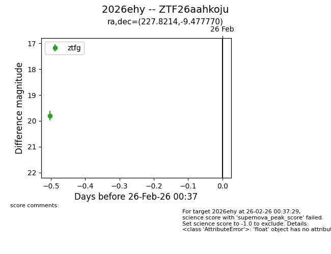
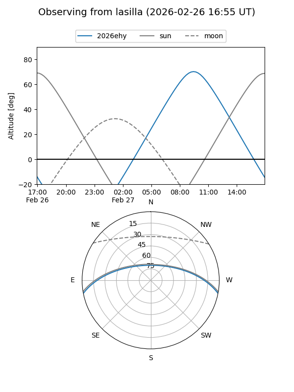
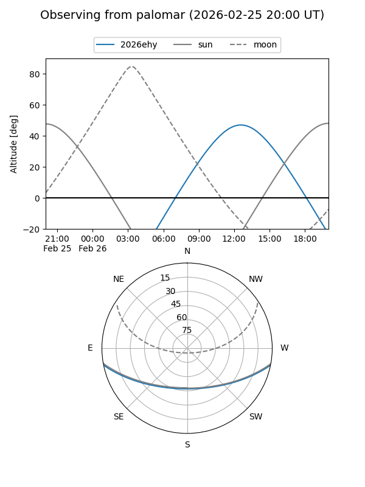
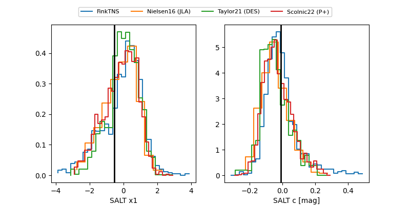

2026ehy
Target 2026ehy at 2026-02-26 00:38
Aliases and brokers:
FINK: link
Lasair: link
ALeRCE: link
TNS: link
YSE: link
alt names
ZTF26aahkoju (ztf,fink_ztf)
2026ehy (tns,yse)
Coordinates:
equatorial (ra, dec) = 227.8214,-9.47777
equatorial (HMS+DMS) = 15:11:17.13,-09:28:39.97
galactic (l, b) = (350.5853,+40.11577)
Flags:
Photometry:
last ztfg=19.80
1 ztfg detections
Lightcurve

Visibility


Additional plots
